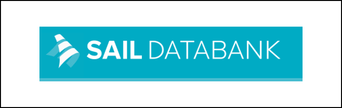

TRExt Kicks Off with Day-One Hackathon
The TRExt team held its inaugural hackathon bringing all partners together to align on tools, architecture, and integration strategy.
Read more →Bringing natural language processing and data standardisation capabilities to Trusted Research Environments — making sensitive unstructured text federation-ready.
TRExt will extend the DARE UK TREvolution federated analytics platform with the ability to process unstructured text — clinical records, reports, correspondence — converting it into structured, standardised formats within Trusted Research Environments (TREs), without exposing sensitive data.
Unstructured text — clinical letters, discharge summaries, radiology reports, transcribed interviews — contains some of the richest health information available. But it is sensitive, difficult to de-identify, and currently locked out of federated analysis pipelines that only handle structured data.
TRExt assembles existing best-in-class NLP tools (MH-TAC, CogStack, MedCAT) with data mapping tools (Lettuce, Carrot, Unison) into a pipeline that runs inside TRE-FX — the DARE UK TREvolution federated execution framework — converting raw text into OMOP and CDISC standard formats with full provenance capture.
Involving the public is central to TRExt, not an afterthought. We run a structured programme of workshops and co-design activities aligned to DARE UK PIE guidelines, with our dedicated PIE Lead at the SAIL Databank ensuring public perspectives shape every technical design decision.
By enabling federated analysis of unstructured text for the first time within TREvolution, TRExt will unlock new research possibilities across health data — including mental health, neurology, and beyond — while setting standards for responsible, privacy-preserving text analytics in TREs across the UK.
The TRExt team held its inaugural hackathon bringing all partners together to align on tools, architecture, and integration strategy.
Read more →Our multi-institutional team spans text analytics, federated infrastructure, clinical NLP, data mapping, and public engagement.
Read more →TRExt has been selected as a DARE UK Research Exemplar, extending the TREvolution platform with text analytics capabilities.
Read more →

TRExt is delivered by a consortium of academic, NHS, and commercial partners.